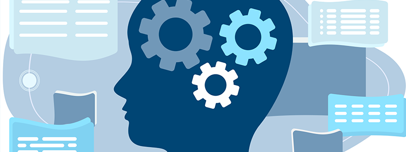

Introdução
Esse site tem como intuito inicial demonstrar minha evolução de aprendizado no mundo da programação. Hoje, doze de março de dois mil e vinte e quatro é o dia em que dou início a este projeto que mostará alguns dos meus desenvolvimentos e futuramente será descontinuado para dar início a um site mais apresentável. Atualmente estou criando conhecimentos e fundamentos básicos com Html5 e CSS3, esses que, foram utilizados para a criação deste site.
Lógica da programação
Após a conclusão dos meus estudos em HTML5 e CSS3, darei prosseguimento em meus estudos através de uma linguagem de programação, pretendo iniciar com Javascript e futuramente indo para C#, acredito que darei início ao aprofundamento dessas linguagens em breve, caso não ocorra imprevistos, porém, terei que dar meus primeiros passos na lógica da programação no qual utilizarei como base o canal Curso Em Vídeo, o mesmo que me permitiu compreender sobre as bases das linguagens de marcação através de seu curso com 4 módulos disponíveis gratuitamente.
Objetivos para 2024
Meu objetivo para 2024 é dar prosseguimento nos meus estudos e conseguir elaborar uma land-page totalmente responsiva, espero conseguir dar início em alguma empresa dentro de 1 ano, ou seja, em 2025 tenho como pretensão ingressar na área como estagiário ou Junior e pretendo me aprofundar em back-end, apesar de atualmente estar focado no front.
Caso tenha chegado até aqui
Obrigado por ler até aqui e seja bem vindo e acessa o meu Github para dar uma moral.